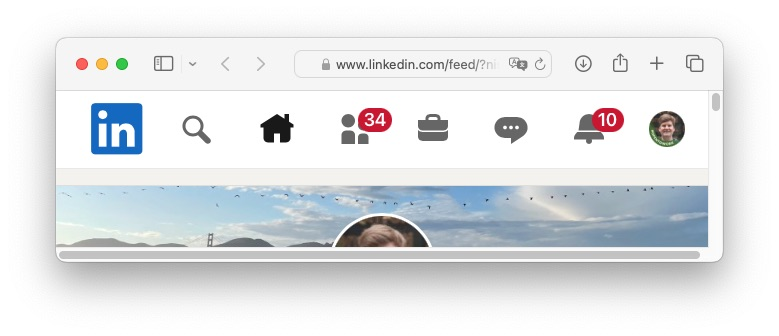

The Browser is Integral to Web App UX
mleonhard, 2024-04-06.
The browser is an integral part of any webapp experience.

If you're making a webapp, carefully consider how your app will behave when you invoke various browser functions.
- Open a bookmark, click a link in email or slack:
- Do I see the same content that was visible when I copied the link?
- Can I open a link from another user?
- Can I get links to popups and expanding content?
- Can I read a link and know what it points to? Ex: /invoices/123.
- Are links short or long? When I email a link, will it get cut into multiple lines?
- Can I tell a link to someone verbally? Are there mixed-case letters or obscure symbols?
- Back & Forward:
- Will this navigate between breadcrumb items (screens)?
- Will it show/hide popups or open/close expanding content?
- Will it undo/redo changes to things on the page?
- Refresh:
- Do breadcrumbs stay?
- Does it keep unsaved changes?
- I make some changes and then close the tab, refresh, or click a link:
- Does it keep my changes for later?
- Does it warn me and let me stay on the page?
- I save changes, but it fails:
- Does it tell me that it didn't save?
- Does the message stay on the screen, hard to miss?
- Can I try saving again?
- I open the app in two browser windows:
- Can I navigate in both windows separately?
- Does each window have its own breadcrumbs?
- What if I change the same content in two windows?
- What if two people change the same content?
- If I make a change but saving fails, then someone changes and saves, then I save, whose changes are
saved?
- I middle-click a link:
- Does a new tab open?
- Can I middle-click a bunch of links and let them load in the background?
- I click a PDF or other file that my browser can show:
- Does it show in the browser, or do I have to save it my computer before looking at it?
- Does it open in a new tab?
- Can I middle-click to open it in a new tab?
- If I send the link to someone, can they view it?
- When we deploy a new version of the app:
- Can I continue working normally?
- Does it lose my unsaved changes?
- Does it close everything and show the homepage?
- When content is taller than the browser window:
- Does a scrollbar appear?
- Is the scrollbar handle clearly visible?
- Can I drag the handle?
- Can I use the mouse scroll wheel? Does it scroll like other apps on my computer?
- Can I drag my finger to scroll it?
- When content is wider than the browser window:
- Does the content flow or resize, so I can use vertical scrolling to see it?
- Does the content extend offscreen and require horizontal scrolling? If so, is there a visual
indicator,
an
affordnace?
- Is the scrollbar handle clearly visible?
- Can I drag the handle?
- Can I drag my finger to scroll it?
- Accessibility, inclusive design:
- Can I pinch to zoom the page?
- When I zoom, does all content resize accordingly?
- Does the app use my browser's font size setting?
- Are modals scrollable, buttons reachable on zoomed screens?